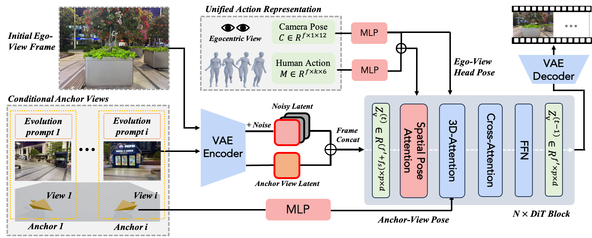
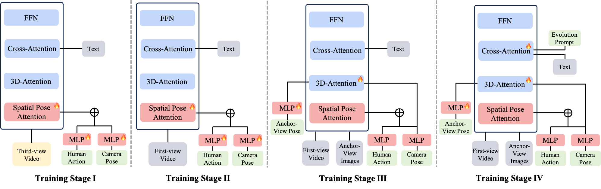

AnchorWorld: Embodied Egocentric World Simulation with View-based Evolution Customization
Videos may take a moment to load on the first visit; they are compressed to enable smoother playback.

TL;DR: AnchorWorld uses embodied human motion as the action signal, enabling an agent or player to explore and interact with a customized, evolvable world from a first-person perspective. Local world states are customized through a set of anchor views, where each anchor view provides an RGB image for visual appearance, a 3D pose for spatial grounding, and an evolution prompt for scene evolution.
Abstract
Despite being a pivotal frontier, interactive world modeling remains underexplored in terms of the versatile controllability required by practical scenarios. To bridge this gap, we present AnchorWorld, a framework that advances egocentric simulation through enhanced interaction integrity and a flexible mechanism for world customization. First, we utilize 3D human motion as the primary interaction modality. To complement the out-of-view or truncated body parts in egocentric views, we introduce an auxiliary training supervision that incorporates exogenous viewpoints decoupled from the agent’s first-person sensorium. It allows the model to observe the agent's full-body positioning relative to the environment, facilitating a more robust spatial grounding of human-world interactions. Furthermore, we propose a simple yet effective mechanism for customizing self-evolving worlds. This is achieved by defining anchor views within a unified world coordinate system, coupled with textual descriptions dictating the dynamic evolution of local scenes. Experimental results show that AnchorWorld significantly outperforms state-of-the-art baselines, while ablation studies validate the effectiveness of our key designs. Notably, our customization scheme exhibits promising spatio-temporal geometric consistency and adheres strictly to the prescribed evolutionary dynamics.
Method

Hybrid-View Human Action Control
Human actions contain rich spatial and interaction cues, including root trajectories for global navigation, limb motions for scene interactions, and head motion for egocentric viewpoints. However, in first-person view (FPV) videos, most body parts are outside the camera view, making full-body action supervision sparse. To address this, we leverage third-person view (TPV) videos as auxiliary data, where complete human motion and scene interactions are visible.
To jointly train on TPV and FPV data, we introduce a projection-based action representation that combines full-body motion with camera trajectories. This enables 3D human motion to be projected into 2D observations under different viewpoints. The model is first pre-trained on diverse TPV videos and then adapted to egocentric simulation by aligning the camera with the human head perspective, leading to stronger action control and spatial pose awareness.
Evolvable Anchor-View Customization
To enable evolvable world customization, we represent the environment with a set of anchor views. Each anchor view provides three types of localized world priors: an RGB image for visual appearance, a 3D pose for spatial grounding, and an evolution prompt for temporal state evolution.
We inject anchor-view conditions without modifying the architecture of the pre-trained video model: (1) we adopt an in-context conditioning strategy by concatenating anchor-view image tokens with video latent tokens along the frame dimension; (2) we encode view poses as pose embeddings and add them to the video tokens before the self-attention layers; and (3) we inject evolution prompts into the cross-attention layers, with an attention mask enforcing each prompt to interact only with its corresponding anchor-view image tokens and video tokens.
Progressive Training

Comparisons
Qualitative comparisons against adapted baselines across egocentric action control, static anchor-view customization, dynamic scene evolution, and out-of-distribution scene generalization (UE and real-world scenes).
Baseline Settings
- Egocentric Action Control: We use PlayerOne [1] as the main baseline, which decomposes human pose into body-part controls. Since its official code was unavailable for our experiments, we re-implement it on Wan2.2 TI2V 5B using our training data, excluding hand poses for fairness due to unreliable estimation.
- Static Scene Consistency: We evaluate PlayerOne with our anchor-view injection mechanism, denoted as PlayerOne-Scene. We also compare with CaM [2], which takes camera poses, scene context, and scene viewpoints as inputs, training two variants on our egocentric data (CaM-Ego) and the official UE dataset (CaM-UE).
- Dynamic Scene Evolution: Since no prior work shares the same setting, we adapt the static-scene baselines by appending evolution prompts to their global text prompts.
Visualization Note
- In the Human Action column, the rendered video visualizes the first-person player's full-body human motion as a gray 3D body and the anchor-view 3D pose as a red wireframe box; both are placed in a unified coordinate system.
- The gray 3D body shown inside the anchor view is only used to indicate the person's position in the scene for easier inspection. During inference, AnchorWorld can use a clean anchor-view image without the first-person human.
- For clearer visualization, we slightly adjust the displayed distance between the anchor-view pose and the human pose in the rendered video, while preserving their spatial relationship.
- Since the egocentric and third-person views in the dataset may be recorded by different cameras, color differences can appear across viewpoints, but they do not affect the evaluation of our method.
- Since hand-pose estimation from the egocentric dataset we use suffers from frequent out-of-view hands, occlusions, and multi-person interference, we remove hand poses from the 3D human-action joints.
References
- Yuanpeng Tu, Hao Luo, Xi Chen, Xiang Bai, Fan Wang, and Hengshuang Zhao. PlayerOne: Egocentric World Simulator. NeurIPS 2025.
- Jiwen Yu, Jianhong Bai, Yiran Qin, Quande Liu, Xintao Wang, Pengfei Wan, Di Zhang, and Xihui Liu. Context as Memory: Scene-Consistent Interactive Long Video Generation with Memory Retrieval. SIGGRAPH Asia 2025.
Demos
Video demonstrations of AnchorWorld capabilities, including embodied egocentric control, anchor-view customization, dynamic text control, out-of-distribution scene generalization, out-of-view evolution, spatial pose awareness, and third-person human action control.
BibTeX
@article{li2026anchorworld,
title={AnchorWorld: Embodied Egocentric World Simulation with View-based Evolution Customization},
author={Li, Yu and Xia, Menghan and Liu, Gongye and Wang, Xintao and Zhang, Conglang and Ke, Lei and Lin, Yuxuan and Chu, Ruihang and Wan, Pengfei and Gai, Kun and Yang, Yujiu},
journal={Preprint},
year={2026}
}